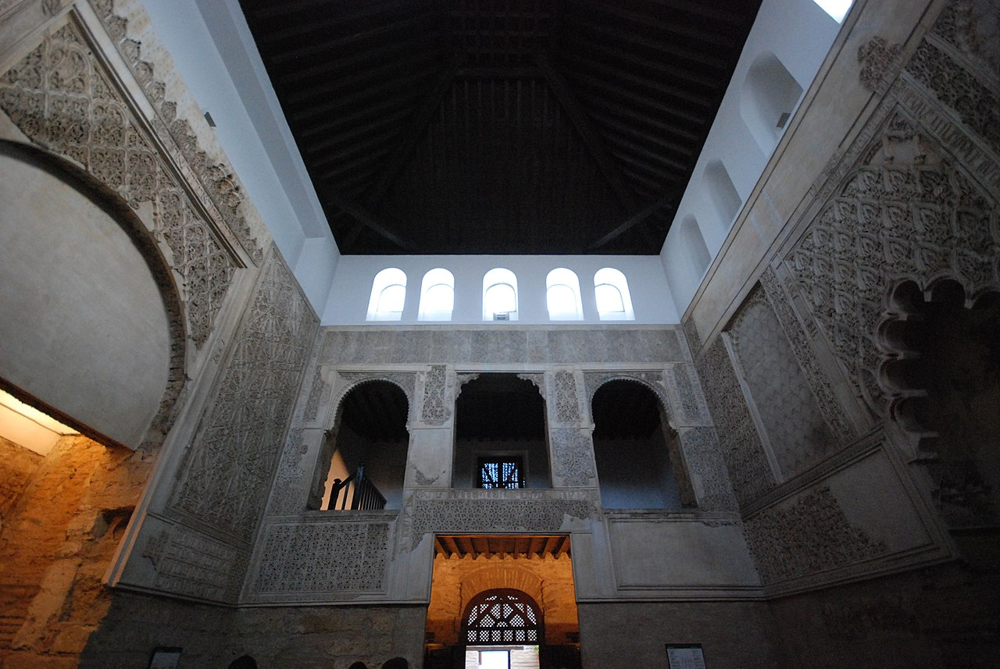
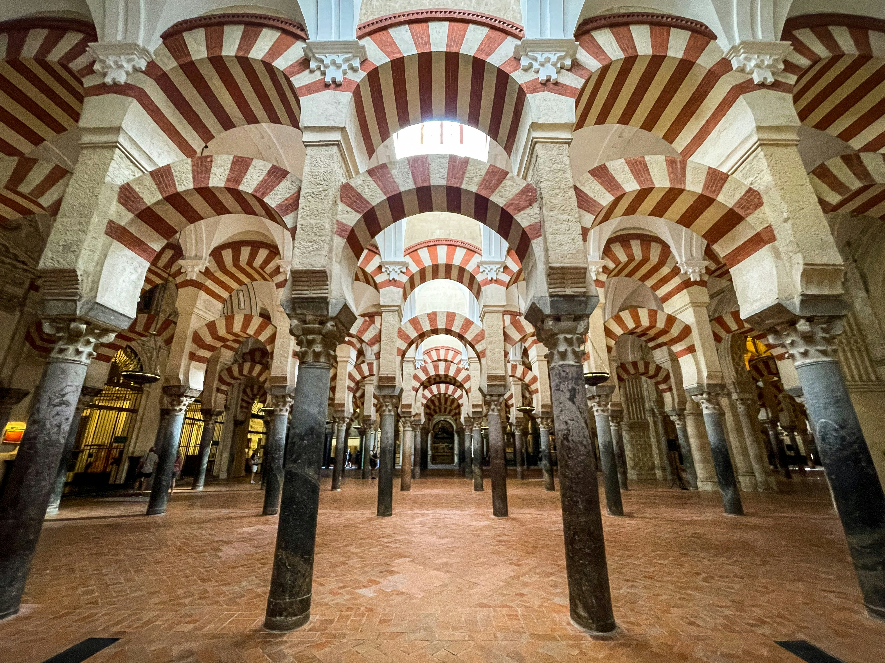
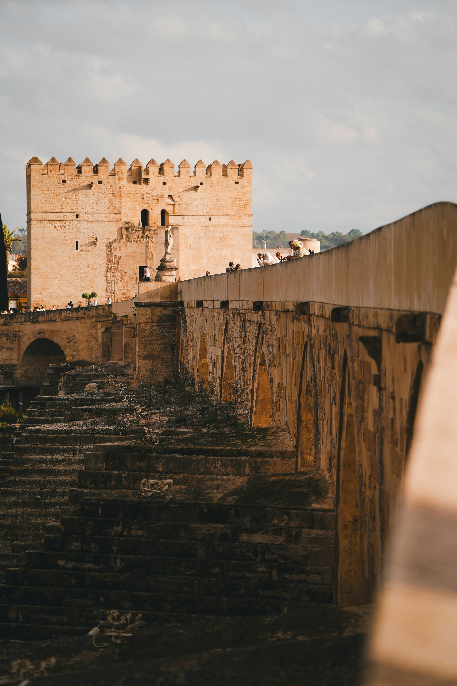
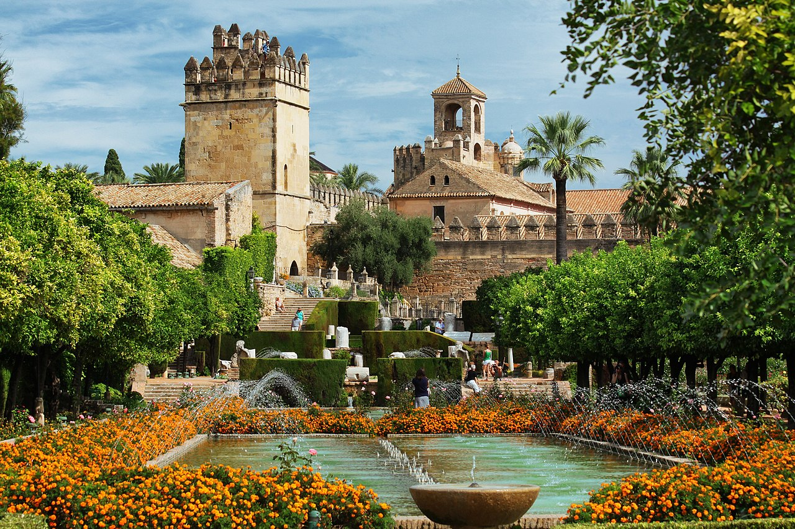
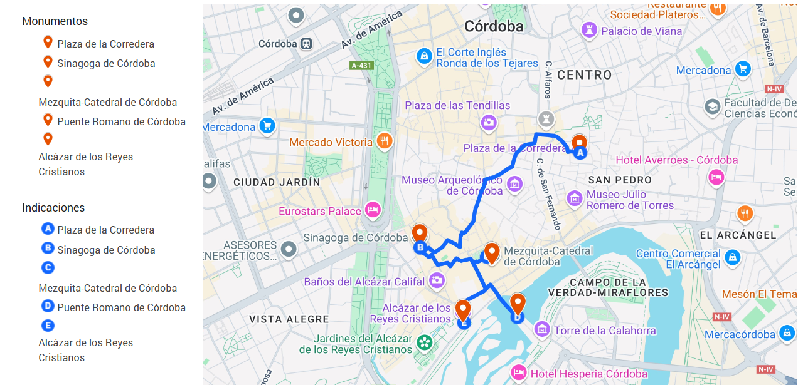

Córdoba, una de las ciudades más cautivadoras de España, es un sitio en el que la historia y la cultura se fusionan para brindar un recorrido memorable a través del tiempo. Su casco histórico, catalogado como Patrimonio de la Humanidad, acoge monumentos que representan la abundancia y variedad de las civilizaciones que la han ocupado. Este viaje histórico está concebido para ser disfrutado a pie, sin requerir transporte, dado que los lugares de interés están muy próximos entre sí.
Este recorrido está pensado para realizarlo en una mañana ya que está todo situado en el casco histórico
1. Plaza de la Corredera
Iniciamos en la Plaza de la Corredera, un sitio emblemático que sobresale por ser la única plaza mayor de estilo castellano en Andalucía. Este lugar ha presenciado sucesos históricos, desde mercados y corridas de toros hasta festividades populares. Su estructura rectangular y sus soportales vibrantes hacen de la Corredera un lugar ideal para comenzar el recorrido y apreciar el ambiente de Cordobes.
Curiosidad: En la plaza se encontraron restos arqueológicos romanos que ahora forman parte del Museo Arqueológico de Córdoba

2. Sinagoga de Córdoba
La próxima parada es la Sinagoga de Córdoba, una joya del siglo XIV y una de las escasas sinagogas de la época medieval que aún existen en España. Este modesto pero espectacular monumento brinda una panorámica de la abundante herencia judía de la ciudad. Sus tenues relieve en las paredes y el emblema en hebreo que adorna el interior reflejan el fulgor cultural de la comunidad sefardí.
Dato interesante: Fue redescubierta en 1884 y posteriormente declarada Monumento Nacional.

3. Mezquita-Catedral de Córdoba
Sin visitar la Mezquita-Catedral, uno de los monumentos más asombrosos del planeta, ningún recorrido por Córdoba sería completo. Este edificio, edificado inicialmente como mezquita en el siglo VIII y posteriormente transformado en catedral en el siglo XIII, representa un caso singular de la coexistencia y el intercambio cultural. Sus rasgos más sobresalientes incluyen el bosque de columnas y arcos de herradura, el mihrab meticulosamente ornamentado y la imponente nave cristiana.
Tip: No te pierdas la vista desde la torre campanario, que ofrece una panorámica inigualable del casco histórico.

4. Puente Romano
Continuamos hacia el Puente Romano, que une la ciudad con su historia romana. Este puente, edificado en el primer siglo antes de Cristo, ha sufrido múltiples renovaciones, pero mantiene su estructura original. Caminar por él es similar a volver al pasado, mientras se aprecian las panorámicas del río y la ciudad.

5. Alcázar de los Reyes Cristianos
Finalizamos la visita en el Alcázar de los Reyes Cristianos, un fuerte edificado en el siglo XIV que sirvió como residencia a los Reyes Católicos. Sus jardines se asemejan a un oasis de serenidad, repleto de fuentes, estanques y una flora abundante. El Alcázar también albergó el Tribunal de la Inquisición y constituyó un centro estratégico de gran relevancia durante la Reconquista.
Actividad sugerida: Subir a las torres del Alcázar para disfrutar de una vista espectacular del casco histórico y el río.

Recorrido
En la imagen, se expondrá la ruta que hay que realizar para poder visitar todos los monumentos mencionados anteriormente.
